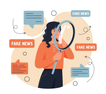

Espere um momento e pense. Não acredite imediatamente e saia compartilhando por aí.
Suspeite de conteúdos que te causem reações emocionais muito fortes. As notícias inventadas são feitas para causar surpresas ou rejeição.
O conteúdo confirma uma crença sua? Desconfie.
A notícia pede para você confiar, porque a “mídia” quer esconder o fato? Desconfie.
Confie em especialistas da área.
Leia toda a matéria, não somente o título. Muitas notícias falsas têm erros gramaticais ou de digitação. Também podem fazer afirmações absolutas sem citar fontes ou informações que se contradizem.

Pesquise o título no Google. Se for verdade, é provável que outras mídias já tenham compartilhado. Se for falso, alguns sites verificadores de dados já podem ter checado a veracidade. Sites: Fato ou Fake, Lupa, Aos fatos, Boatos, etc.
Descubra a fonte. É uma corrente do Whatsapp sem autoria? Cita uma fonte legítima? Pesquise o nome da mídia ou do autor no Google para ver o que mais essa pessoa fez e em qual mídia trabalha. Preste atenção se o site que publicou as notícias têm um viés fortemente ideológico.
Confira os dados. Se há depoimento de uma autoridade, resultados de pesquisa, datas, números e índices, essas informações podem ser conferidas no Google e provavelmente outros veículos já os tenham divulgado.
Verifique o contexto. Algumas fake news divulgam informações do passado como acontecimentos atuais. Observe se o contexto faz sentido.
Recebeu uma foto que conta uma história? Você pode fazer uma pesquisa “inversa” de imagens e ver se outros sites a reproduziram. Salve a foto no seu computador e faça o upload no imagens.google.com ou no reverse.photos.
Recebeu um áudio ou vídeo? Tente pesquisar o conteúdo na internet usando palavras-chave e “whatsapp” ou a plataforma que você recebeu essa mídia.
Desconfie de experiências pessoais. As experiências pessoais (evidências anedóticas) não têm validade científica alguma em comparação a estudos com um grande número de pessoas, porque podem ter ocorrido ao acaso ou a conclusão tirada pelo autor está errada.
Correlação não é causa. Geralmente, em experiências pessoais ou até em alguns estudos, uma correlação é estabelecida entre eventos comuns: “quanto mais eu tomo isso, menos mal eu fico”. No entanto, correlação não implica causa.
Denuncie a publicação ou o contato As redes sociais, como Twitter, Facebook, Instagram e Whatsapp estão melhorando suas políticas de checagem de conteúdo. Denuncie a postagem ou o contato (Whatsapp) para a própria rede social ou compartilhe a postagem em grupos de checagem de fatos.